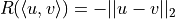

OASS for Shortest Path
This example shows how OASS find the shortest path on a graph. Now it only supports DAG, but the algorithm for general graph is under development.
Obviously, for shortest path problems on directed acyclic graphs, a simple depth-first search algorithm is sufficient. This document serves only as an example to help you understand the OASS algorithm.
import matplotlib.pyplot as plt
import networkx
import numpy as np
import torch
from oass import StaticDirectedAcyclicGraph, GradientCalculator
from oass.ShortestPath import EdgeProbModel
Generate a DAG randomly. The process is very simple, lay 100 nodes in a grid, and then generate edges randomly, allowing only edges from bottom to top.
def generate_random_dag(n=100, m=300):
'''
Generate a DAG randomly.
Args:
n (int): Number of vertexes.
m (int): Number of edges.
Returns:
nodes (list): The coordinate of each node. It will be used in visualization.
edges (set): The edge set.
'''
nodes = []
for i in range(n):
nodes.append(np.array([i//10/10, i % 10/10]))
edges = set()
while len(edges) < m:
u, v = np.random.randint(
0, len(nodes)), np.random.randint(0, len(nodes))
if abs(nodes[u][1]-nodes[v][1]) < 0.001 or abs(nodes[u][1]-nodes[v][1]) > 0.11:
continue
if abs(nodes[u][0]-nodes[v][0]) > 0.3:
continue
if nodes[u][1] < nodes[v][1]:
edges.add((u, v))
else:
edges.add((v, u))
edges = list(edges)
return nodes, edges
def show_graph(nodes, edges, path=[]):
'''
Plot the graph.
Args:
nodes (list): The coordinate of each node. It is generated by ``generate_random_dag``.
edges (set): The edge set. It is generated by ``generate_random_dag``.
path (list): A highlighted path.
'''
G = networkx.DiGraph()
G.add_nodes_from(list(range(len(nodes))))
G.add_edges_from(edges)
passed_edges = set((u, v) for u, v in zip(path[:-1], path[1:]))
plt.figure(figsize=(10, 10))
networkx.draw_networkx(
G,
pos=nodes,
node_color="#BBDEFB",
edge_color=["#f57c00" if (u, v) in passed_edges else "#4472c4" for u, v in G.edges]
)
nodes, edges = generate_random_dag()
show_graph(nodes, edges)
Define node rewards and edge rewards. The node reward is 0 for all nodes except for the top-right node, which is the destination.
The edge reward is the opposite of the Euclidean distance in the plane.

G = StaticDirectedAcyclicGraph()
for i in range(len(nodes)):
G.add_node(i)
for u, v in edges:
G.add_edge(u, v)
node_reward = [10 if i==99 else 0 for i in range(len(nodes))]
edge_reward = []
for u in range(G.n):
edge_reward.append([-np.linalg.norm(nodes[u]-nodes[v], ord=2) for v in G.edge[u]])
Build a neural network model. This model has no input layer. It has only m parameters, corresponding to m edges, which are output directly after the Softmax function is applied. The output value represents the probability of movement.
model = EdgeProbModel(G)
optimizer = torch.optim.Adam(model.parameters(), lr=1.0)
gradient_calculator = GradientCalculator(extra_function="log")
Before we train the model, see the path chosen by the model starting from node 0.
show_graph(nodes, edges, gradient_calculator.get_path(G, model(), 0))
Now, it is time to train the model!
model.train()
for epoch in range(1, 101):
action_prob = model()
# The last axis is batch_size, which is 1 in this problem.
action_prob = [x.unsqueeze(-1) for x in action_prob]
E, D = gradient_calculator.calculate_gradient(
G,
[x.detach().numpy() for x in action_prob],
node_reward,
edge_reward
)
if epoch % 10 == 0:
print("epoch:", epoch, "reward:", E[0])
loss = 0
for d, p in zip(D, action_prob):
if d.shape[0] != 0:
loss += torch.sum(-torch.tensor(d)*p)
loss += torch.norm(model.edge_embedding, 2)*0.1
optimizer.zero_grad()
loss.backward()
optimizer.step()
epoch: 10 reward: [8.52428932]
epoch: 20 reward: [8.55889916]
epoch: 30 reward: [8.61627625]
epoch: 40 reward: [8.62150592]
epoch: 50 reward: [8.62180512]
epoch: 60 reward: [8.62261305]
epoch: 70 reward: [8.62219507]
epoch: 80 reward: [8.62182361]
epoch: 90 reward: [8.6217676]
epoch: 100 reward: [8.62191194]
Finally, see the shortest path it found.
show_graph(nodes, edges, gradient_calculator.get_path(G, model(), 0))